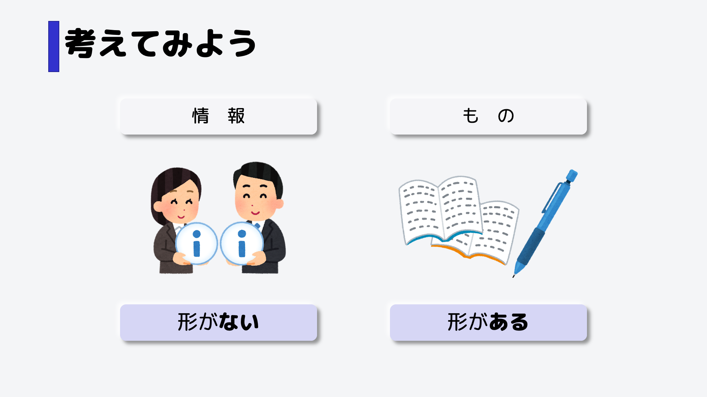
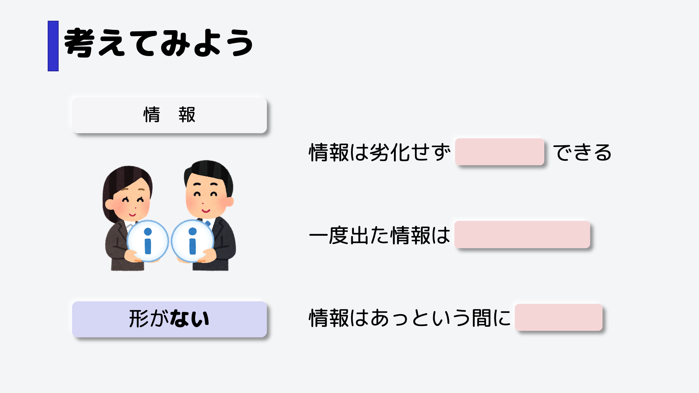
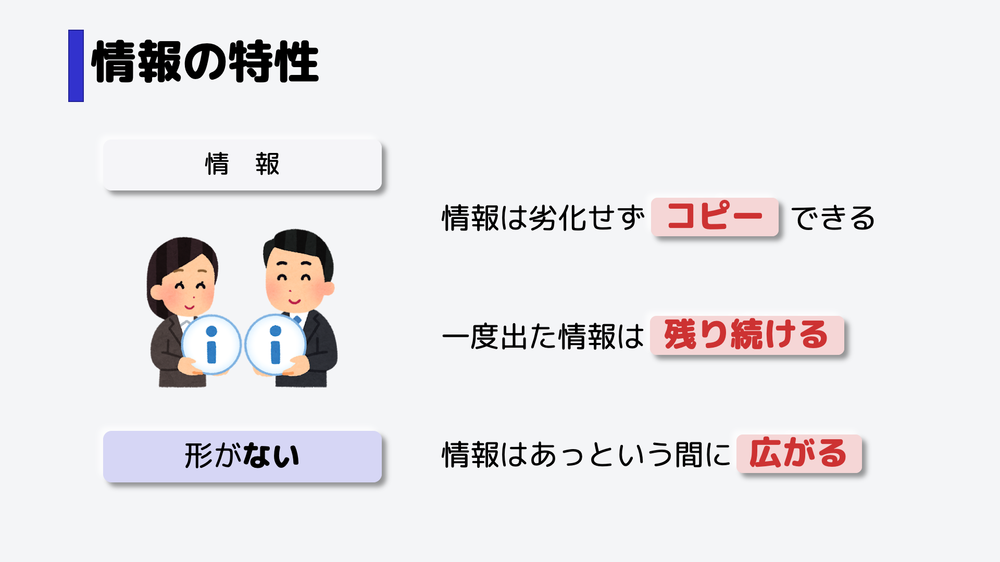
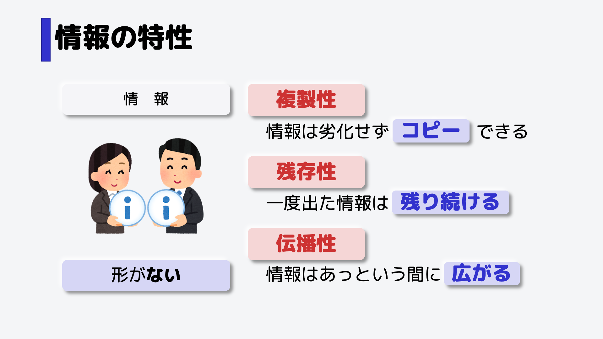
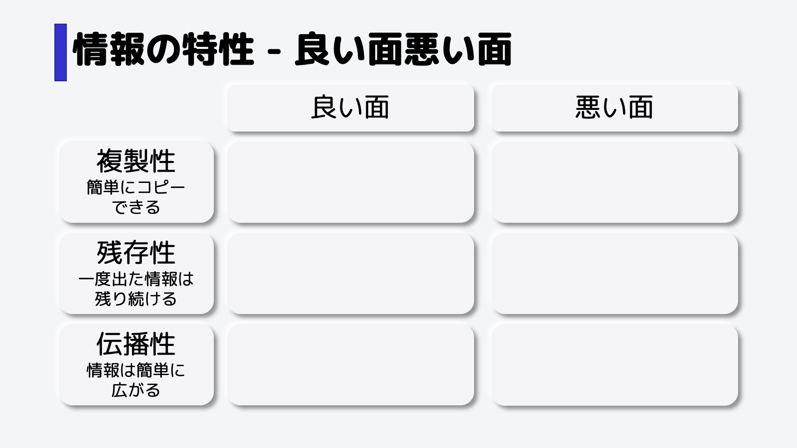

情報の特性
形がない情報ならではの「残存性・複製性・伝播性」などの特性を、身近な例えで図解。高校「情報I」の基礎理解に。
情報の特性

形があるノートやペンなどの「もの」と比べると、情報というのは触ったり、それを持ったりすることができず、形がないのが特徴です。

では、形がない情報だからこそ、次のような特徴があります。どういったものでしょうか。

まず、情報は劣化することなく簡単にコピーすることができます。
次に、一度世の中に出た情報は残り続けます。記憶を意図的に消すことはできません。
最後に、情報はあっという間に色々なところに広がります。
情報の特性 良い面悪い面

それぞれ、複製性、残存性、伝播性（でんぱせい）といいます。

その3つの特性は、画面のように良い方向に働くケースと、悪い方向に働くケースがあります。